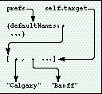
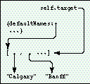
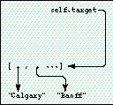
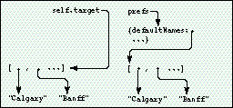

Q I have a slip in my application that edits part of my application preferences. I use
GetAppPrefs to get the preferences frame, and then set a pointer to a subframe in my
slip:
myAppPref.viewSetupFormScript := func() begin local prefs := GetAppPrefs(kAppSymbol, kDefaultPrefFrame); self.target := prefs.defaultNames; inherited:?viewSetupFormScript(); end
The user makes the change and I use EntryChangeXmit, but sometimes I lose the change.
Any hints?
A It looks as if you're encountering an interaction between soup entries and garbage
collection. In your viewSetupFormScript, you use GetAppPrefs to load the soup entry
corresponding to your application preferences into the NewtonScript heap. Then you
set a target slot in your preferences slip to the defaultNames slot in that preferences
frame. I assume that some time later, probably in the viewQuitScript, you reload your
preferences frame (with GetAppPrefs again) and call EntryChangeXmit on the frame
returned by that call.
The problem occurs because you use a local variable to point to your preferences
entry. Once the viewSetupFormScript is completed, this local goes away, so the
preferences entry is subject to garbage collection. This may seem unintuitive since
soups are where you store persistent data. However, there's a difference between the
data that comprises an entry in a soup and an actual entry in the NewtonScript heap.
When you request a soup entry, the data from the soup is swapped into the heap so that
you can access it as a frame. The entry on the heap is a copy of the data in the soup, not
the real data. Changes to that heap copy aren't written to the soup until you call
EntryChangeXmit.
After your call to GetAppPrefs, the heap looks like Figure 1. Then your
viewSetupFormScript returns and the prefs local goes away, so your heap looks like
Figure 2.

Figure 1. Heap after GetAppPrefs

Figure 2. Heap after viewSetupFormScriptNotice in Figure 2 how there is nothing
referencing the preferences entry, but there is something referencing the
defaultNames subobject. As far as the system is concerned, the preferences entry
frame is now available for garbage collection. The next time the preferences entry is
loaded in, an entire new copy of that entry is made, including the defaultNames
subobject. Soself.target points to a valid NewtonScript array that's different from
the new copy of your preferences entry.
This explains why the information doesn't get updated, but not why this doesn't happen
every time. It doesn't happen every time because the soup system will cache the frame
representation of a requested entry. When you request an entry, the first thing the
soup system does is check for a cached entry. If it exists, it's used, in which case the
defaultNames subobject is the same one thatself.target is referencing -- that is, no
new copy of the preferences entry is loaded into the heap.
So, what happens is that once the user finishes editing the entry, you call GetAppPrefs,
which may return the cached preferences entry. If garbage collection has occurred,
your target slot will point to the edited version of the defaultNames structure, but not
to the defaultNames slot value from the new preferences frame. Figure 3 shows the
heap after garbage collection has occurred. After your call to GetAppPrefs, you get the
situation shown in Figure 4. Your local prefs variable points to a new heap copy of the
preferences entry, but your target slot points to the old defaultNames value. The
EntryChangeXmit call will affect the new copy of the soup entry, leaving it apparently
unchanged.

Figure 3. Heap after garbage collection

Figure 4. Heap after GetAppPrefsThere are two ways to fix this: you could put the
edited defaultNames structure into the preferences frame before calling
EntryChangeXmit, or you could hold a reference to the application preferences in your
slip (or in your base view) for the duration of the edit. The first way is more memory
efficient.
The lesson is that keeping around references to objects inside soup entries is a
dangerous practice. The safe thing to do is read in your entry, do the modifications,
save the entry, and set the reference to nil.
Q I have an application that may print or fax many pages of information. I need to
draw a lot of the content of those pages. I know that in 1.x viewDrawScripts, faxing
needed to be fast. How about in 2.0? Are there better ways to go?
A The main thing missing in Newton 1.x OS is a method that gets called before the
fax connection is made. In Newton 2.0 OS, the formatInitScript method of your print
format will be called before the connection is made. You can use this script to do
time-consuming drawing and cache the results for later use.
An extension of this technique is to render all your pages into a Virtual Binary Object
and then access the appropriate place in that object during printing or faxing. The
advantage of this is that you save heap space, since a VBO is paged in to a system heap
(not the NewtonScript heap). For some devices this is the only way to print large
numbers of pages.
Q The setup application uses some nifty embedded keyboards. I checked the beta
version of the Newton Programmer's Guide for a prototype, but there doesn't appear to
be one. Is this an oversight? How can I make these keyboards?
A There are several, as yet undocumented, ROM prototypes for embedded keyboards.
They will appear in the final Newton Programmer's Guide, but for now they're in the
Newton Toolkit platform file:
All of these embedded keyboards will send input to the current key view. All you have
to do is draw one in your layout and make sure the target view is the current key view.
See the Newton DTS Q&A document on the Newton Developer CD for instructions on how
to use an afterScript to set the proto of a view.
Q I'm porting my code from Newton 1.x OS to Newton 2.0 OS. When I build my
project using Newton Toolkit 1.6 and the 2.0 platform file, I get an error telling me
that k<insertNameHere>Func is undefined. What's the problem?
A The chances are that your 1.x code is using one of the platform file functions that
either have been incorporated into ROM or are obsolete. However, developers may
want to write code that works on both Newton 2.0 and 1.x devices. To enable this, we
provide the old functions but we mark them as deprecated, which means they shouldn't
be used in Newton 2.0-savvy applications, but can be used for compatibility reasons.
For example, in 1.x platform files there's a kRegisterCardSoupFunc function; in the
2.0 platform file, this is called kRegisterCardSoupDeprecatedFunc since there's a new
and better way to register soups in Newton 2.0 OS. See the platform file release notes
for a list of deprecated functions, protos, and so on.
Q How are reals represented in the package format? The data field for 12.345 is
represented as 0x4028B0A3D70A3D71, for example.
A NewtonScript uses the Apple SANE double format (basically the IEEE format)
for floating-point numbers. These are implemented as 8-byte binary objects of class
real and contain a sign bit, 11 bits of biased exponent, and 52 bits of fraction.
0x4028B0A3D70A3D71 is the binary data (8 bytes) of the SANE representation of
12.345. It's the same data that's used to hold the number on the Newton itself.
Q I would like to add a separator line followed by some new application-specific
actions. I proceeded to register a frame with the title as the symbol pickSeparator. It
worked, except that the separator was selectable. All I'm trying to achieve is an
eye-pleasing separation between the system actions and my actions. I also tried
returning in the GetTitle routine a frame with
{item: 'pickSeparator, pickable: nil}
but that resulted in a blank entry. Is there a way to do what I'm trying to do -- that is,
to have a pickSeparator that isn't selectable in the action button?
A In the routeScripts array, you can use a nil value instead of a frame. That will
add another pickSeparator at that position in the routeScripts. Note that the system
will fill in the separator between the items that are routing transports (like Print)
and the items that are actions (such as Delete). If you need to add this separator
dynamically, you can provide your own GetRouteScripts method that dynamically
returns the routeScripts frame.
That said, please check the latest Newton 2.0 User Interface Guidelines to make sure
that you're putting a separator in a valid spot.
Q I'm profiling my application to see why it takes so long to open. However, of the
time it takes to open, only a small percentage is spent in my code. I'm measuring from
the start of the viewSetupFormScript to the end of the viewSetupDoneScript in my
base view.
A There are a few things you can do. The first is to make sure you're profiling
system functions to see if that's where the time is going. It may be that you're doing
things in your startup process that would be better done at a later time.
You may also be running into low-memory conditions. Run the HeapShow utility that
comes with Newton Toolkit and look at the frames heap and free system space (handles
and pointers). You can do this in combination with NS Debug Tools to step through your
code and track memory usage. Note that the Newton Toolkit inspector will use a fair bit
of system space, so you may want to get a baseline memory usage without the inspector
connected.
Q I'm having two problems with a protoPicker view. First, when I open a
protoPicker view (whose vFloating flag I haven't turned off) it's obscured by a
textButton in the main view. I can't figure out why it doesn't float over this plain
vanilla textButton.
Also, I can't select some of the items in the picker. The inaccessible items appear last
in the list, from the portion of the picker view that extends beyond the picker's parent
view or the slip's main view.
The only unusual thing I can see here is that the protoPicker view is not a sibling of
the textButton. The view hierarchy looks like this:
slipMainView clusterView protoPicker textButton
Can you help?
A It looks like the protoPicker is being opened as a child of the clusterView. This
means that the active (tappable) area of the protoPicker will be clipped to the bounds
of the clusterView. It also sounds like the clipping viewFlag of the clusterView isn't
set. That allows the protoPicker to be drawn outside of its parent, so you may think it's
clickable even when it isn't.
There are three possible solutions:
Q How do I reset a protoTextList so that when I change the listItems and redisplay,
the display starts at the first item again? Right now if I've scrolled the text list and
then I reset it, the top item is wrong.
A The documentation mentions a SetupList method that you call when you initialize
the view. However, this is not enough if you're changing the listItems after you've
opened the textList. Since the current implementation of textList scrolls by offsetting
the origin, you also need to reset the origin.
Here's a method that you can add to your own protoTextList that will add a text item and
redraw the list correctly:
myProtoTextList.AddItem := func()
begin
// make sure listItems is an array
if NOT listItems then
listItems := [];
local newItem := GetRandomWord(5, 10);
// insert in sorted order for strings
BInsert(listItems, newItem, '|Str<|, nil, nil);
// redisplay based on new data
// this will reset the list to the top item
:SetOrigin(0, 0);
:SetupList();
:RedoChildren();
end;
Q Can you write a funny Q&A ?
A Yes.
The llama is the unofficial mascot of the Developer Technical Support group in Apple's
Newton Systems Group. Send your Newton-related questions
todr.llama@applelink.apple.com (AppleLink DR.LLAMA). The first time we use a
question from you, we'll send you a T-shirt.*
Thanks to Xopher Bell, Henry Cate, Bob Ebert, Mike Engber, David Fedor, Ryan
Robertson, Jim Schram, Maurice Sharp, and Bruce Thompson for these answers.
Special thanks to Bob Ebert for the answer on the format of reals.*
If you need more answers, check out http://dev.info.apple.com/newton on the World
Wide Web or look at Newton Developer Info on Applelink.*